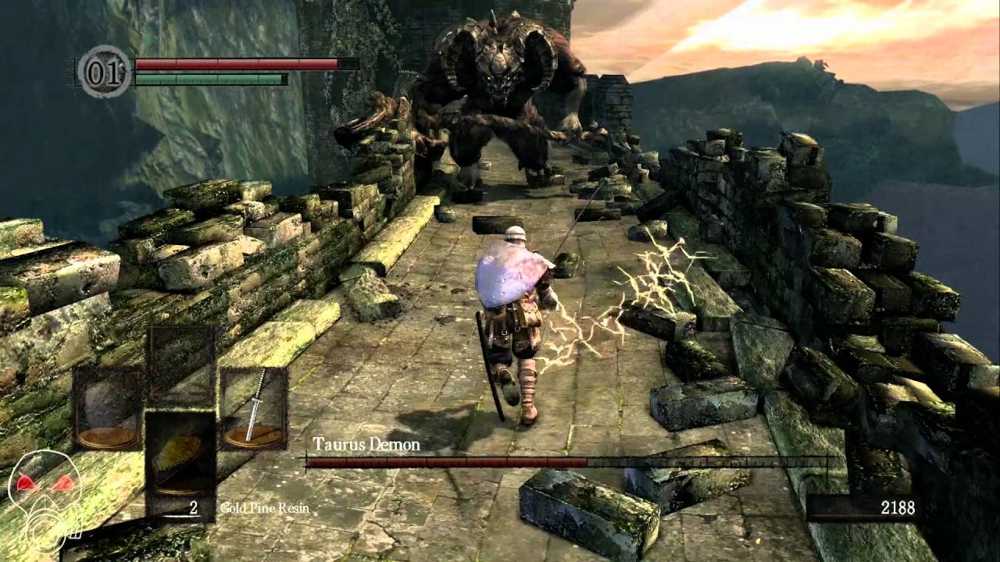
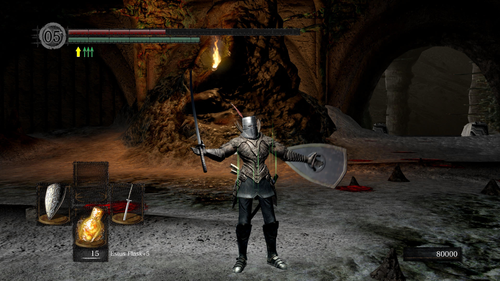
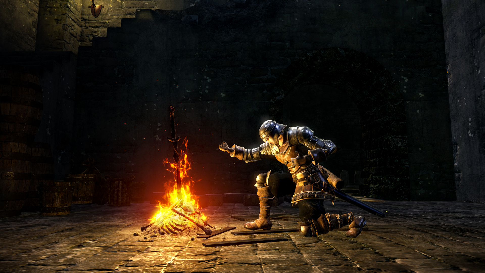
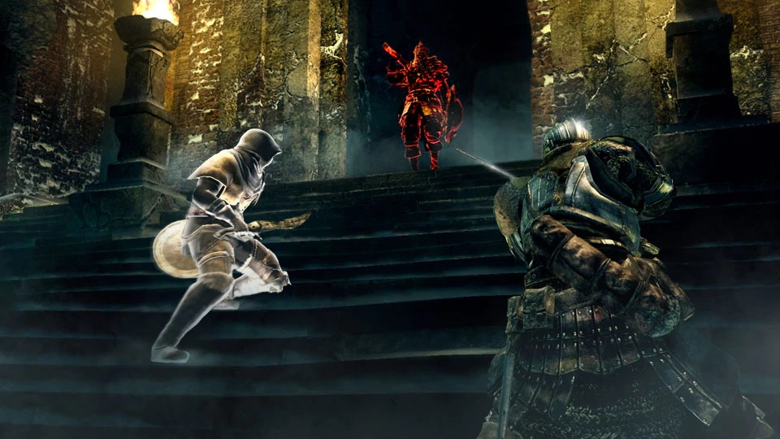

Dark Souls

Dark Souls is a 2011 Action Role-Playing game made by FromSoftware. It is played in third person perspective and follows the player character's quest to reignite the First Flame. They do this by leveling up stats in order to become more powerful, while facing a wide range of enemies including giant skeletons and dragons! Here is a brief synopsis taken from Wikipedia:
Synopsis
The opening cutscene establishes the premise of the game. Everlasting Dragons once ruled over the world during the "Age of Ancients." A primordial fire known as the First Flame manifests in the world, establishing a distinction between life and death, and light and dark. A being known as Gwyn happens upon the First Flame and along with his allies use their new power to destroy the dragons and take control over the world, while the Furtive Pygmy is said to be forgotten, and thus begins the "Age of Fire." Over time, as the First Flame begins to fade while humans rise in power, Gwyn sacrifices himself to prolong the Age of Fire. The main story takes place towards the end of this second Age of Fire, at which point humanity is said to be afflicted with an undead curse related to a symbol on their bodies known as the Darksign. Those humans afflicted with the undead curse perpetually resurrect after death until they eventually lose their minds, a process referred to as "hollowing." The player character is a cursed undead, locked away in the Northern Undead Asylum until Oscar of Astora throws down a corpse with a key to help them fulfill a prophecy that the undead individual will escape the asylum and ring the Bells of Awakening.
Available On:
- Xbox
- PC
- Playstation
- Nintendo Switch
Image Gallery



